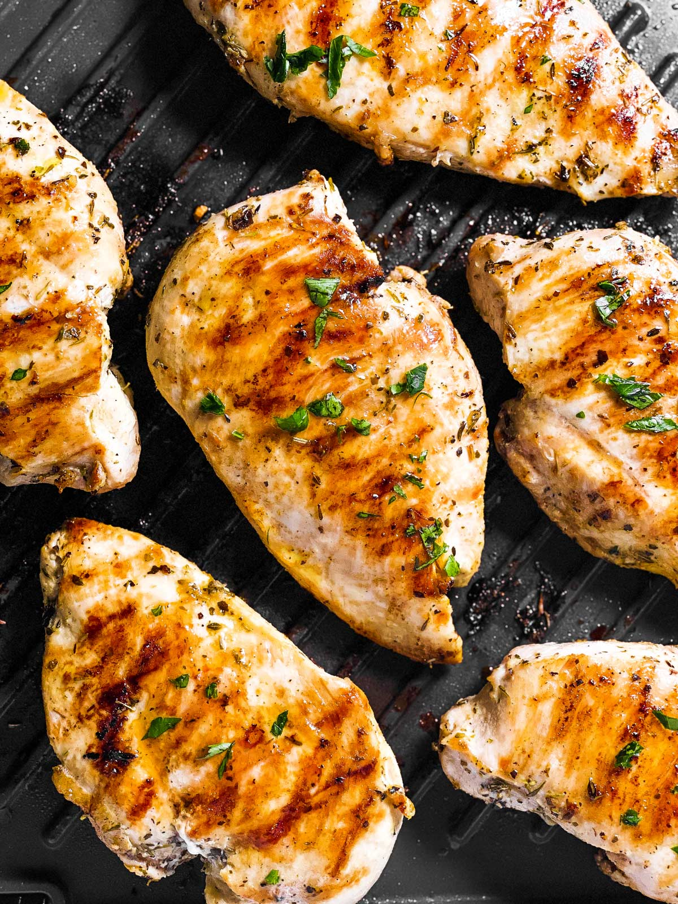

Chicken Breast

Description
Chicken breast is such an easy cut to grill. They cook fast and come out
super juicy and flavorful as long as you don’t overcook them. I’m sharing
an easy, basic (but delicious!) chicken marinade in the recipe below, but
feel free to use any marinade you like!
Ingredients
- Chicken breast
- olive oil
- garlic powder
- Italian seasoning
- garlic
- lemon juice
- sugar
- salt and pepper
Steps
-
Start by pounding the chicken to an even thickness of ½ to ¾ inch: Stick
the chicken into a large zip-zop bag (4 to 6 quart for 2 pounds of
chicken is a comfortable size) and pound it flat with either the flat
side of a meat mallet or a heavy rolling pin.
-
Combine the ingredients for the marinade in a small bowl or measuring
jug.
-
Pour the marinade over the chicken in the bag. Let out extra air, then
zip it close. Massage the marinade into the chicken, then refrigerate
for 4-12 hours (you can do less marinating time if you’re in a hurry,
see notes further down on the page).
-
Once ready, heat the grill to high heat. Grill the chicken for 2-4
minutes per side, covered, until juices run clear (see notes below for
using an indoor grill).